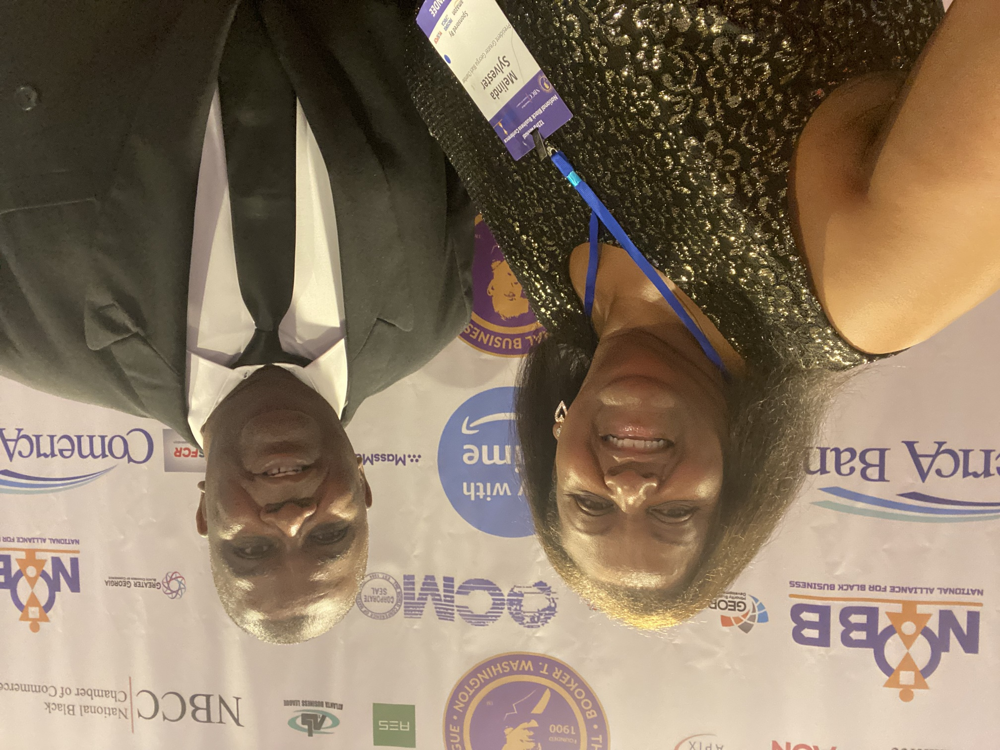

Clarence's Journey
Meet Clarence Sylvester, an oil industry and nonprofit sector trailblazer who discovered he had two superpowers. Born into a family of 13 children on a farm in rural Louisiana, Clarence's path to success always seemed paved with perseverance and spiritual conviction. But it was his near-death experience that provided the divine receipts. After being revived from cardiac arrest, Clarence's first word was "JESUS," and he realized then he hadn’t just been lucky in his ascent from those humble beginnings—God had a unique formula for his life.
Clarence's life has always been a beautiful blend of challenges, professional triumphs, and personal joys. After traveling the globe as a pioneering manager in the oil industry, Clarence played a pivotal role in establishing the Greater Georgia Black Chamber of Commerce, an unwavering community champion for African American small businesses. During the COVID-19 pandemic, his efforts paid off as the Black Chamber became one of the first responders to small businesses, providing vital support and resources to those in need.
In tandem, Clarence and his wife Melinda, with whom he's shared 40 years of marriage, built a life filled with love, purpose, and legacy. Together, they raised two incredible children, Clara and Julius, and created a thriving business partnership through Tel-Mel Media & Publishing Co, LLC, and Faith & Soul News Magazine. And it was his twin superpowers that enabled him to toggle on these triumphs and the life-giving stability and balance they created—for his family, and countless others. Learn More


Life-Changing Mindset Shift and Benefits
"The Just Man" is more than just a memoir; it's a guide to overcoming adversity and
finding success through faith and resilience. Clarence's story shows us that:
- No challenge is too great to overcome, and every setback is an opportunity for growth.
- A growth mindset and determination can propel us forward, even in the face of
adversity.
- Faith and purpose can guide us through life's darkest moments and lead us to success.
- By sharing his experiences and insights, Clarence empowers us to unlock our full
potential and achieve our goals.
As an advocate for change management and workforce development, Clarence's passion for
empowering others shines through on every page. His story is a testament to the power of
perseverance, hard work, and faith.